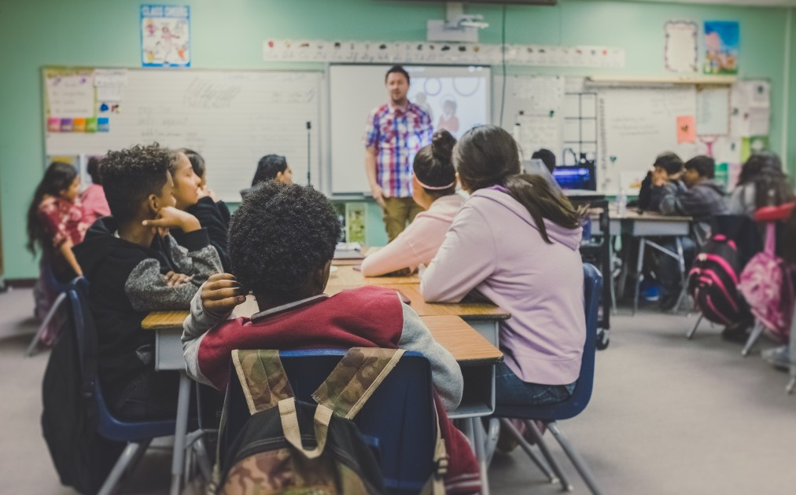

Star College
APPLYArts Stream
General Science
Overview
- The General Associate of Arts Degree provides students with a strong foundation in the general arts. It also prepares students to pursue a Bachelor’s degree in General Arts or a related field.
- Students will be offered a wide range of Arts courses that is not limited to one area of study
- Graduates will acquire knowledge from various Humanities and Social Sciences disciplines including anthropology, communication, criminology, economics, geography, political science, psychology, and sociology
Communication
Overview
- The Associate of Arts Degree in Communication allows students to learn about the various critical approaches to media and technology in historical and cultural contexts. It also prepares students to pursue a Bachelor’s degree in Communication or a related field.
- Students will explore and analyze the various dimensions of communication.
- Graduates will gain literacy in media and information technologies.
- Students will be able to explore various areas in Communication such as advertising, cultural industries, informational technology, history of media, digital media, political economy, and television.
Psychology

Overview
- The Associate of Arts Degree in Psychology allows students to build a foundation in the field of psychology and prepared them to pursue a Bachelor’s degree in Psychology or a related field.
- Students will learn the history and theories of psychology while developing critical thinking, written and verbal skills that will carry over to various careers and disciplines.
- Students will be able to explore various areas in psychology such as research methods, data analysis as well as social, cognitive, eco, child and biological psychology.